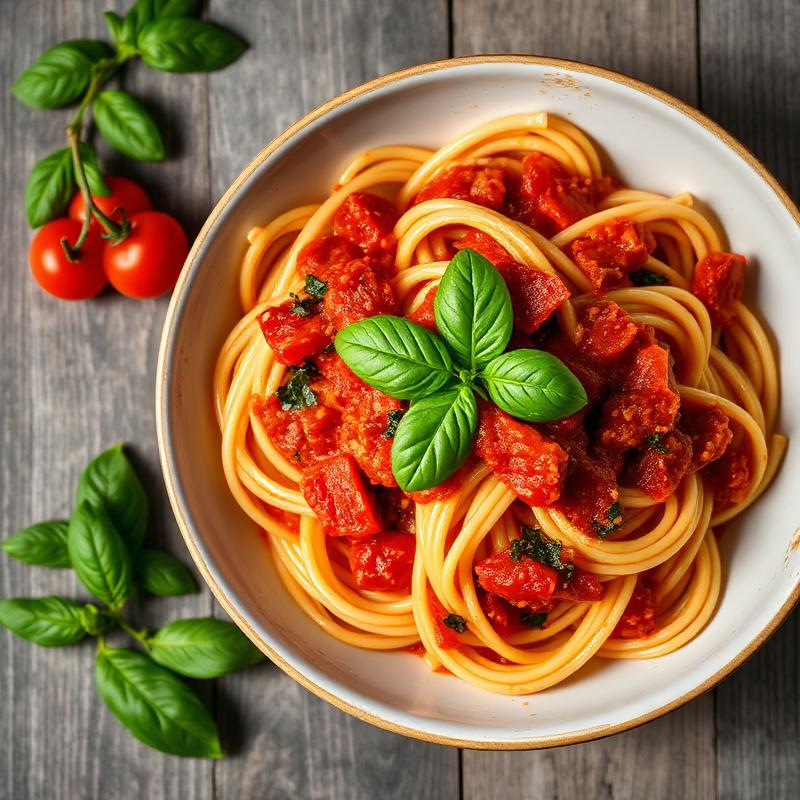

Classic Spaghetti Marinara
A traditional Italian pasta dish with homemade tomato sauce and fresh basil
4 servings Easy
Ingredients
- 400g Spaghetti
- 6 large tomatoes, diced
- 4 cloves garlic, minced
- Fresh basil leaves
- 3 table spoon olive oil
- Salt and pepper to taste
- Parmesa cheese for serving
Instructions
- Bring a large pot of salted water to boil and cook spaghetti according to package directions
- Heat olive oil in a large pan over medium heat
- Add minced garlic and sauté until fragrant, about 1 minute
- Add diced tomatoes and cook for 15-20 minutes until sauce thickens
- Season with salt and pepper, then stir in fresh basil
- Drain pasta and toss with the marinara sauce
- Serve hot with grated Parmesan cheese